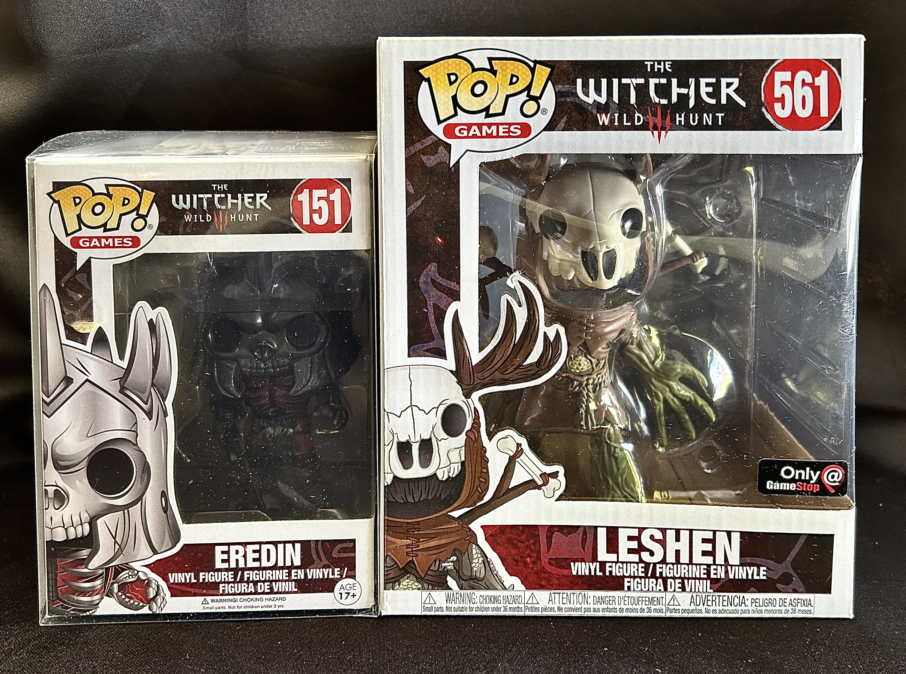
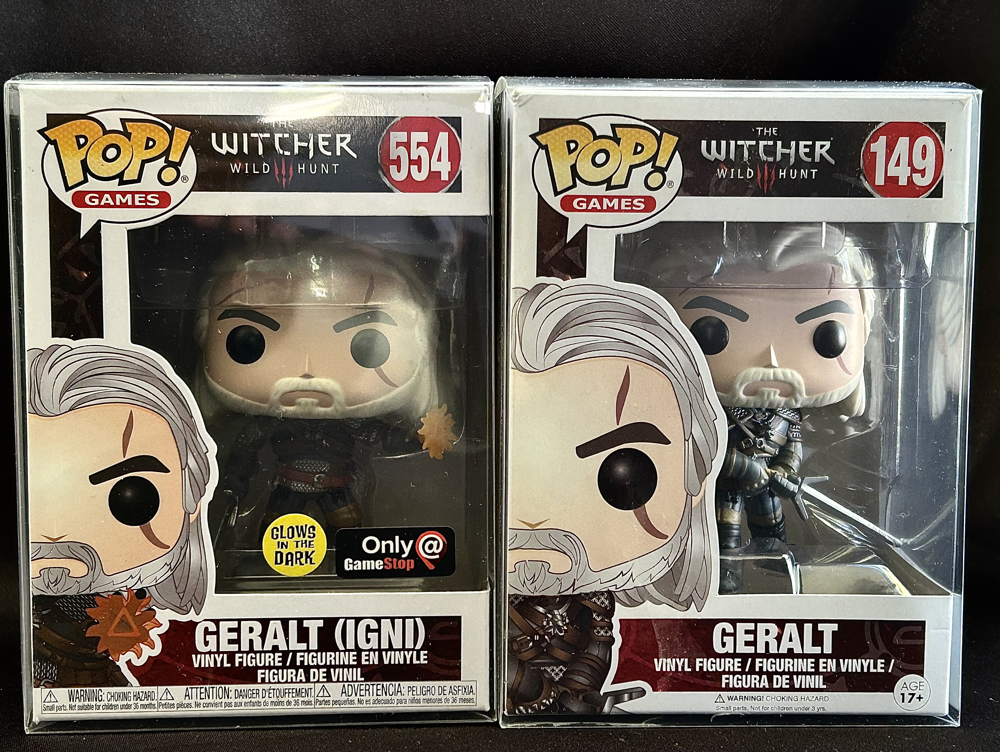
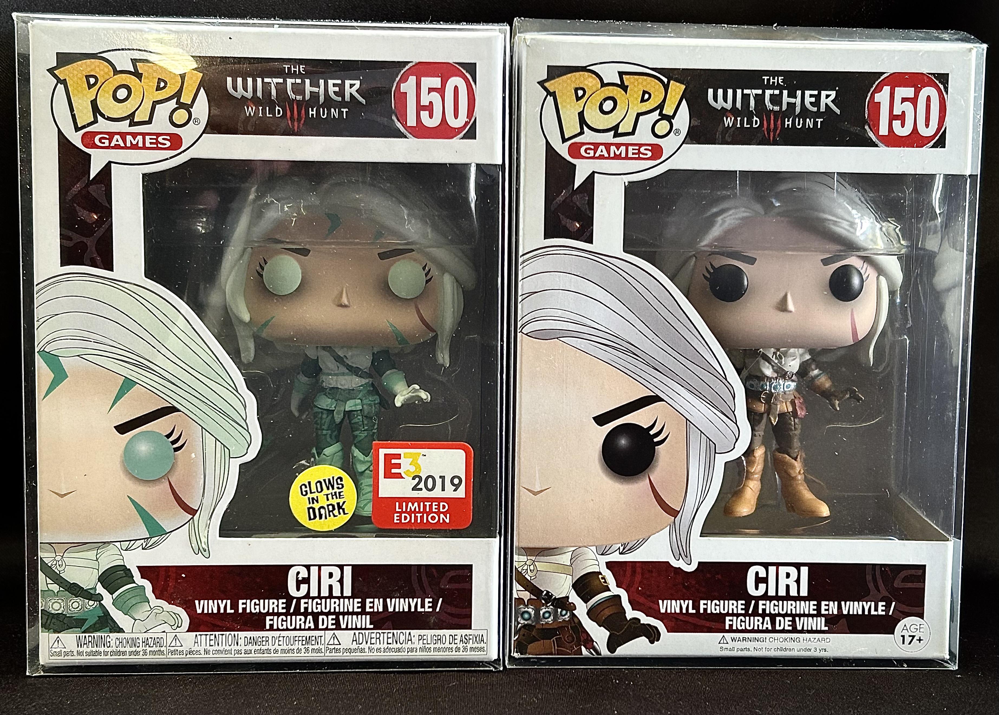
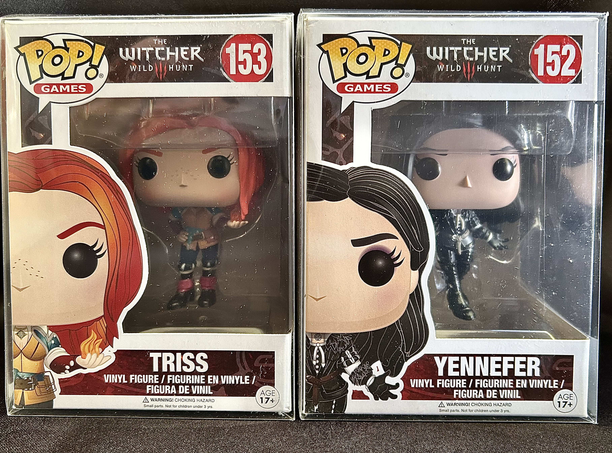
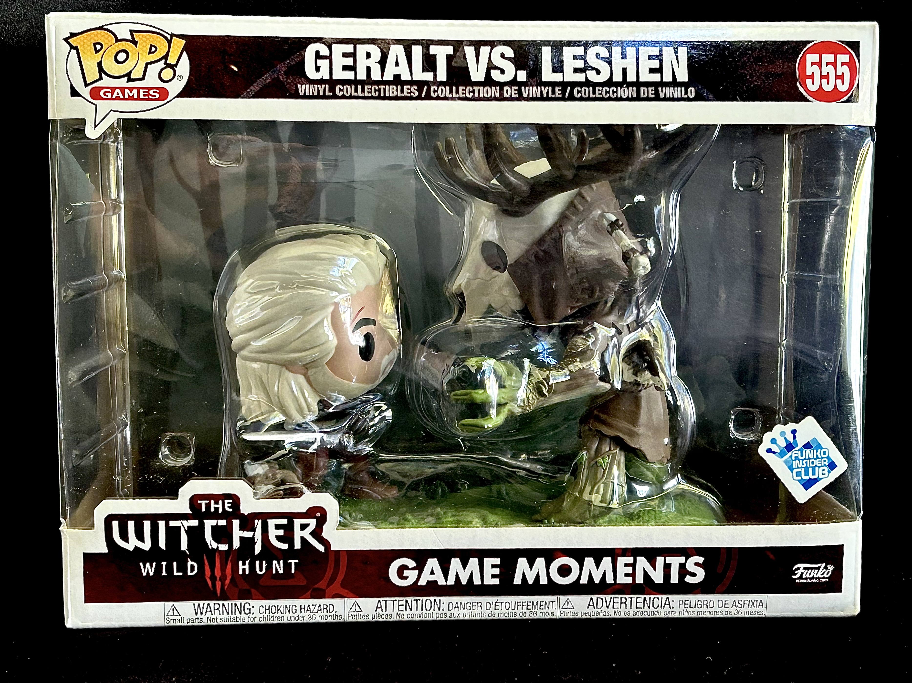

Welcome to Funko Pops!
Discover the world of collectible figurines and add some pop culture to your life!

Featured Funko Pops

Two Geralt Pops: original silver-haired witcher and exclusive glow-in-the-dark version. Essential for Witcher fans!

Ciri Pops: standard ashen-haired warrior and E3 exclusive glowing edition. Showcase her Elder Blood powers!

Triss and Yennefer Pops: Fiery redhead and raven-haired sorceress. Magic and beauty in Funko form!

Geralt vs Leshen diorama: Epic battle between witcher and forest spirit. Brings game action to life!
×

"Our Witcher Funko Pop collection brings the rich world of The Witcher to life in adorable, collectible form. From the dual Geralt Pops showcasing his classic look and mystical glow-in-the-dark variant, to Ciri's figures capturing her journey from princess to dimension-hopping warrior. The sorceresses Triss and Yennefer stand as a testament to the powerful women in Geralt's life, while the Geralt vs Leshen diorama encapsulates the thrilling monster hunts that define the series. Each Pop is a miniature work of art, carefully designed to embody the essence of these beloved characters. Whether you're a die-hard fan of the books, games, or Netflix series, these Funko Pops offer a unique way to celebrate and display your love for The Witcher saga."
Join the Funo Pop Community!
Sighn up now to recieve updates on new releases and exclusive offers.